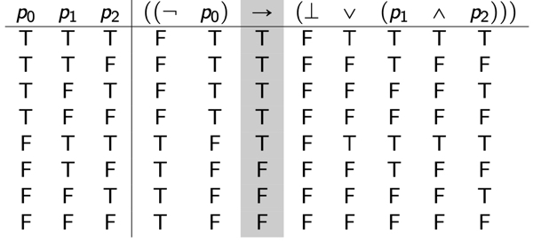

Truth Tables and Models
This tutorial assumes familiarity with the definition of truth tables. We use the symbols \(\mathsf{T}\) and \(\mathsf{F}\) for the two truth values truth and falsity, respectively. Other texts might use different symbols for the truth values: e.g., \(1\) or \(\top\) for truth and \(0\) or \(\bot\) for false.
Truth Tables
Recall the definition of truth tables for each of the logical connectives $\neg, \(\wedge\), \(\vee\), \(\rightarrow\), \(\leftrightarrow\) and the special atomic proposition \(\bot\):
| \(\varphi\) | \(\bot\) | \(\neg\varphi\) |
|---|---|---|
| \(\mathsf{T}\) | \(\mathsf{F}\) | \(\mathsf{F}\) |
| \(\mathsf{T}\) | \(\mathsf{F}\) | \(\mathsf{T}\) |
| \(\varphi\) | \(\psi\) | \(\varphi\wedge\psi\) | \(\varphi\vee\psi\) | \(\varphi\rightarrow\psi\) | \(\varphi\leftrightarrow\psi\) |
|---|---|---|---|---|---|
| \(\mathsf{T}\) | \(\mathsf{T}\) | \(\mathsf{T}\) | \(\mathsf{T}\) | \(\mathsf{T}\) | \(\mathsf{T}\) |
| \(\mathsf{T}\) | \(\mathsf{F}\) | \(\mathsf{F}\) | \(\mathsf{T}\) | \(\mathsf{F}\) | \(\mathsf{F}\) |
| \(\mathsf{F}\) | \(\mathsf{T}\) | \(\mathsf{F}\) | \(\mathsf{T}\) | \(\mathsf{T}\) | \(\mathsf{F}\) |
| \(\mathsf{F}\) | \(\mathsf{F}\) | \(\mathsf{F}\) | \(\mathsf{F}\) | \(\mathsf{T}\) | \(\mathsf{T}\) |
Finding a truth table for a formula
The truth table for \(((\neg p_0) \rightarrow (\bot \vee (p_1\wedge p_2)))\) is:

See https://text.phil171.org/logic/5 for an overview of how to find truth tables.
Models
Model
Suppose that \(\sigma\) is a signature. A \(\sigma\)-model, also called a \(\sigma\)-structure, is a function \(A\) with domain \(\sigma\) that assigns a truth value to each atomic proposition in \(\sigma\). We call \(A\) a model, or structure, when \(\sigma\) is clear from context.
If \(\sigma\) is finite, then each row of a truth table with a column for each atomic proposition in \(\sigma\) is a \(\sigma\)-structure. Furthermore, every \(\sigma\)-structure corresponds to a row of a truth table for \(\sigma\).
If \(A\) is a \(\sigma\)-structure, then \(A\) assigns a truth value to each atomic proposition in \(\sigma\). We define truth for all formula of \(LP(\sigma)\) using the following (flattened) compositional definition:
Truth
Suppose that \(\sigma\) is a signature and that \(A\) is a \(\sigma\)-model. We define a function \(A^*:LP(\sigma)\rightarrow \{\mathsf{T}, \mathsf{F}\}\) as follows:
- If \(p\) is a propositional symbol in \(\sigma\), then \(A^*(p)=A(p)\)
- \(A^*(\bot)=\mathsf{F}\)
- \(A^*((\neg\varphi))=\mathsf{T}\) if \(A^*(\varphi)=F\) and is \(\mathsf{F}\) otherwise.
- \(A^*((\varphi\wedge\psi))=\mathsf{T}\) if \(A^*(\varphi)=A^*(\psi)=\mathsf{T}\) and is \(\mathsf{F}\) otherwise.
- \(A^*((\varphi\vee\psi))=\mathsf{T}\) if \(A^*(\varphi)=\mathsf{T}\) or \(A^*(\psi)=\mathsf{T}\) and is \(\mathsf{F}\) otherwise.
- \(A^*((\varphi\rightarrow\psi))=\mathsf{T}\) if \(A^*(\varphi)=\mathsf{F}\) or \(A^*(\psi)=\mathsf{T}\) and is \(\mathsf{F}\) otherwise.
- \(A^*((\varphi\rightarrow\psi))=\mathsf{T}\) if \(A^*(\varphi)=A^*(\psi)\) and is \(\mathsf{F}\) otherwise.
Suppose that \(A\) is a \(\sigma\)-structure. When \(A^*(\varphi)=\mathsf{T}\), we say "\(A\) is a model of \(\varphi\)" or that "\(\varphi\) is true in \(A\)", denoted \(\models_A \varphi\).
Valid, Satisfiable, Contradiction
Let \(\sigma\) be a signature and \(\varphi\) a formula of \(LP(\sigma)\).
-
We say that \(\varphi\) is valid, also called a tautology, denoted \(\models_\sigma\varphi\), when for every \(\sigma\)-structure \(A\), \(\models_A\varphi\). When \(\sigma\) is clear from context, we write \(\models\varphi\).
-
We say that \(\varphi\) is consistent, also called satisfiable, when there is some \(\sigma\)-structure \(A\) such that \(\models_A\varphi\).
-
We say that \(\varphi\) is a contradiction when there is no \(\sigma\)-structure \(A\) such that \(\models_A\varphi\).
Notation
Suppose that \(\varphi\) is a formula of \(LP(\sigma)\) and \(A\) is a \(\sigma\)-structure.
- \(\models_A\varphi\) means \(A^*(\varphi)=\mathsf{T}\)
- \(\not\models_A\varphi\) means \(A^*(\varphi)=\mathsf{F}\)
- \(\models\varphi\) means for all \(\sigma\)-structures \(A\), \(A^*(\varphi)=\mathsf{T}\)
- \(\not\models\varphi\) means there is some \(\sigma\)-structure \(A\), such that \(A^*(\varphi)=\mathsf{F}\)
Logical Equivalence
Logical Equivalence
Suppose that \(\sigma\) is a signature and \(\varphi\) and \(\psi\) are formulas of \(LP(\sigma)\). We say that \(\varphi\) is logically equivalent to \(\psi\), denoted \(\varphi\mathrel{\mathsf{eq}}\psi\), when for every \(\sigma\) structure \(A\), \(A^*(\varphi)= A^*(\psi)\).
There are alternative characterizations of \(\varphi\mathrel{\mathsf{eq}}\psi\). The following are equivalent:
- \(\varphi\mathrel{\mathsf{eq}}\psi\)
- For all \(\sigma\)-structures \(A\), \(A\) is a model of \(\varphi\) if and only if \(A\) is a model of \(\psi\)
- \(\models\varphi\leftrightarrow\psi\)
Example of a logical equivalence
We have that \((p_0\rightarrow p_1) \mathrel{\mathsf{eq}}\neg p_0\vee p_1\). You can see this by the following truth table:
| \(p_0\) | \(p_1\) | \(p_0\rightarrow p_1\) | \(\neg p_0\vee p_1\) |
|---|---|---|---|
| \(\mathsf{T}\) | \(\mathsf{T}\) | \(\mathsf{T}\) | \(\mathsf{T}\) |
| \(\mathsf{T}\) | \(\mathsf{F}\) | \(\mathsf{F}\) | \(\mathsf{F}\) |
| \(\mathsf{F}\) | \(\mathsf{T}\) | \(\mathsf{T}\) | \(\mathsf{T}\) |
| \(\mathsf{F}\) | \(\mathsf{F}\) | \(\mathsf{T}\) | \(\mathsf{T}\) |
The following are some important logical equivalences:
| Name | Equivalence |
|---|---|
| Double Negation | \((\neg(\neg p_1))\mathrel{\mathsf{eq}} p_1\) |
| DeMorgan's Law | \((\neg( p_1\vee p_2))\mathrel{\mathsf{eq}} ((\neg p_1)\wedge (\neg p_2))\) |
| \((\neg( p_1\wedge p_2))\mathrel{\mathsf{eq}} ((\neg p_1)\vee (\neg p_2))\) | |
| Distribution | \(( p_1\wedge(p_2\vee p_3))\mathrel{\mathsf{eq}} (( p_1 \wedge p_2)\vee ( p_1\wedge p_3))\) |
| \(( p_1\vee(p_2\wedge p_3))\mathrel{\mathsf{eq}} (( p_1\vee p_2)\wedge ( p_1\vee p_3))\) | |
| Associativity | \(( p_1\vee(p_2\vee p_3))\mathrel{\mathsf{eq}} ((p_1\vee p_2)\vee p_3)\) |
| \(( p_1\wedge(p_2\wedge p_3))\mathrel{\mathsf{eq}} ((p_1\wedge p_2)\wedge p_3)\) | |
| Absorption | \(( p_1\vee( p_1 \wedge p_2))\mathrel{\mathsf{eq}} p_1\) |
| \(( p_1\wedge( p_1\vee p_2))\mathrel{\mathsf{eq}} p_1\) | |
| Idempotence | \((p_1\vee p_1)\mathrel{\mathsf{eq}} p_1\) |
| \((p_1\wedge p_1)\mathrel{\mathsf{eq}} p_1\) | |
| Commutativity | \(( p_1\wedge p_2)\mathrel{\mathsf{eq}}(p_2\wedge p_1)\) |
| \(( p_1\vee p_2)\mathrel{\mathsf{eq}}(p_2\vee p_1)\) |
Aditional Reading
- Sections 3.5 and 3.6 of Mathematical Logic by Chiswell and Hodges.
Exercises
-
True or false: If \(\not\models_A \varphi\), then \(\models_A\neg\varphi\).
Show Answer
This is true. If \(\varphi\) is not true in \(A\), then it must be false in \(A\), and if \(\varphi\) is false in \(A\), then \(\neg\varphi\) is true in \(A\).
-
True or false: If \(\not\models \varphi\), then \(\models\neg\varphi\).
Show Answer
This is false. If \(\varphi\) is not valid, then there is some model \(A\) such that \(A^*(\varphi)=\mathsf{F}\). We cannot conclude from this that every model makes \(\varphi\) false.
-
True or false: If \(\not\models \varphi\), then \(\varphi\) is a contradiction.
Show Answer
This is false. If \(\not\models\varphi\), then there is some model \(A\) that makes \(\varphi\) false. We cannot conclude from this that every model makes \(\varphi\) false.
-
True or false: \(\models \neg\varphi\) if and only if \(\varphi\) is a contradiction.
Show Answer
This is true. \(\models\neg\varphi\) means every model \(A\) makes \(\neg\varphi\) true, which is equivalent to every model \(A\) makes \(\varphi\) false.
-
True or false: If \(\varphi\) is not satisfiable, then \(\models \neg \varphi\).
Show Answer
This is true. If \(\varphi\) is not satisfiable, then there is no model \(A\) that makes \(\varphi\) true. This means that every model \(A\) makes \(\varphi\) false. So, \(\models\neg\varphi\).
-
Verify that each of the formulas in the above table of equivalences are logically equivalent.
https://umd.instructure.com/courses/1301043/assignments/5530366